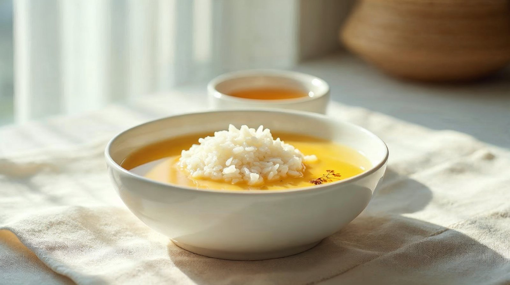
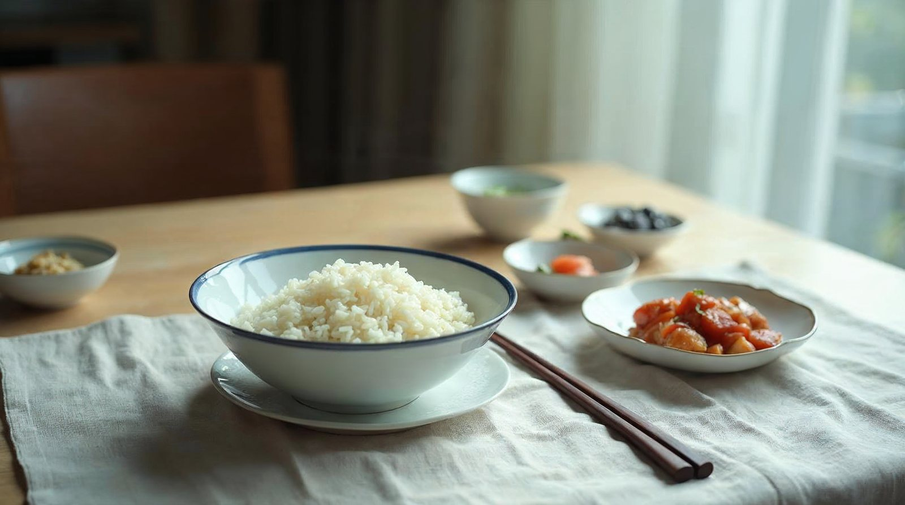
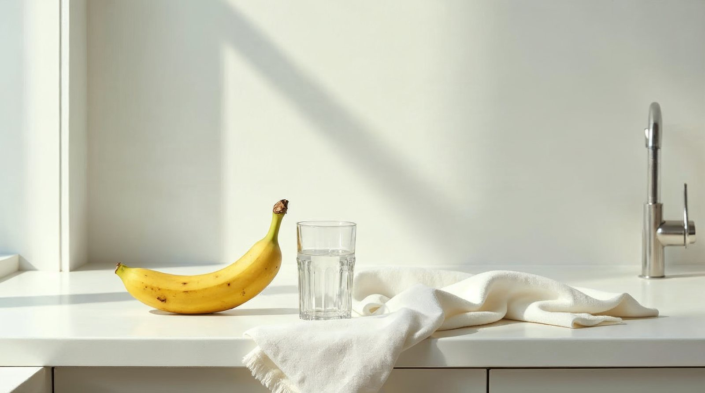
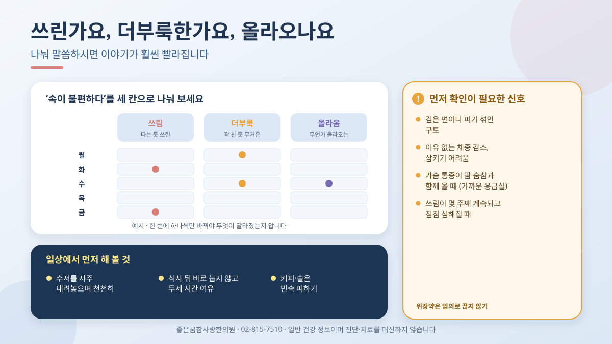

이종호 한의사 감수좋은꿈참사랑한의원 대표원장 (한의사 면허번호 19769)발행 2026-11-23 · 수정 2026-11-24
이 글의 차례
속이 불편하다는 말 안에는 쓰린 느낌, 꽉 찬 느낌, 올라오는 느낌이 섞여 있습니다. 세 가지는 함께 살펴볼 생활이 조금씩 달라서, 어느 쪽에 가까운지 나눠 말씀해 주시면 이야기가 훨씬 빨라집니다.
왜 이런 불편이 생길 수 있나요
- 쓰린 느낌은 빈속이 길거나 커피·술·매운 음식이 겹친 날 잘 생기는 경우가 있습니다.
- 꽉 찬 느낌은 빨리 먹거나 많이 먹은 날, 긴장이 큰 날 자주 이야기됩니다.
- 올라오는 느낌은 먹고 바로 눕거나 배를 조이는 자세에서 심해지기도 합니다.
- 한의학에서는 소화를 볼 때 식사뿐 아니라 잠과 긴장, 몸의 온기도 함께 살핍니다.
- 식사 시각이 들쭉날쭉하면 같은 음식이라도 날마다 불편함이 다르게 느껴질 수 있습니다.

먼저 이렇게 여쭙니다
- 불편한 곳이 명치인가요, 배 전체인가요?
- 타는 듯 쓰린가요, 꽉 찬 듯 무거운가요, 무언가 올라오는 느낌인가요?
- 식사 직후, 몇 시간 뒤, 빈속 중 언제 주로 불편한가요?
- 트림, 신물, 메스꺼움이 함께 있나요?
- 식사 뒤 바로 눕거나 오래 앉아 있는 편인가요?
일상에서 먼저 해 볼 수 있는 것
- 한 끼를 천천히, 수저를 자주 내려놓으며 먹기
- 식사 뒤 바로 눕지 말고 두세 시간 여유 두기
- 저녁은 잠들기 세 시간 전쯤 마치기
- 커피와 술은 빈속을 피하고 마시는 날을 줄여 보기
- 허리띠나 옷이 배를 조이지 않게 하기
예를 들어 점심 뒤 배가 꽉 차고 트림이 잦다면 다음 날은 같은 메뉴를 천천히 먹어 보고, 저녁 뒤 신물이 올라온다면 식사를 한 시간 앞당겨 차이를 적어 보세요. 한 번에 하나씩만 바꿔야 무엇이 달라졌는지 알 수 있습니다.

한의원에서 함께 살필 수 있는 경우
- 식사 뒤 배가 꽉 차고 트림이 잦은 경우 먹는 속도와 소화 상태를 함께 살핍니다.
- 긴장하는 날마다 속이 쓰리고 답답한 경우 스트레스와 식사 리듬을 함께 살핍니다.
- 저녁 늦게 먹은 날 밤에 속이 불편해 잠을 설치는 경우 식사 시각과 잠의 관계를 함께 살핍니다.
좋은꿈참사랑한의원에서는 모든 분께 그렇듯 맥부터 짚으며 불편한 느낌과 식사 습관을 여쭙고, 필요하면 혀(설진)와 배(복진)도 살핀 뒤 상태에 맞춰 침이나 한약 상담 등을 정합니다. 내시경 같은 검사가 먼저 필요해 보이면 그 순서도 안내합니다.

이렇게 기록해 오시면 상담이 쉬워집니다
- 쓰림, 더부룩함, 올라옴 세 칸을 만들어 날마다 해당하는 칸에 표시
- 불편했던 끼니의 메뉴와 먹는 속도
- 식사 뒤 바로 눕거나 앉아 있었는지
- 커피, 술, 매운 음식, 밀가루 음식을 먹은 날
복용 중인 위장약은 처방한 의사와 상의 없이 줄이거나 끊지 않습니다.
이런 증상은 먼저 확인이 필요합니다
- 검은 변이나 피 섞인 구토, 이유 없는 체중 감소나 삼킴 곤란이 있는 경우
- 가슴이 조이듯 아프거나, 가슴 통증에 식은땀이나 숨참이 함께 오는 경우
이런 신호가 있으면 한의원보다 가까운 병원이나 응급실을 먼저 찾으세요.

여쭙는 것
- 불편한 곳이 명치인가요, 배 전체인가요?
- 타는 듯 쓰린가요, 꽉 찬 듯 무거운가요, 무언가 올라오는 느낌인가요?
- 식사 직후, 몇 시간 뒤, 빈속 중 언제 주로 불편한가요?
생활에서 해 볼 것
- 한 끼를 천천히, 수저를 자주 내려놓으며 먹기
- 식사 뒤 바로 눕지 말고 두세 시간 여유 두기
- 저녁은 잠들기 세 시간 전쯤 마치기
한의원에서 함께 살필 것
- 식사 뒤 배가 꽉 차고 트림이 잦은 경우 먹는 속도와 소화 상태를 함께 살핍니다.
- 긴장하는 날마다 속이 쓰리고 답답한 경우 스트레스와 식사 리듬을 함께 살핍니다.
- 저녁 늦게 먹은 날 밤에 속이 불편해 잠을 설치는 경우 식사 시각과 잠의 관계를 함…
먼저 확인이 필요한 신호
- 검은 변이나 피 섞인 구토, 이유 없는 체중 감소나 삼킴 곤란이 있는 경우
- 가슴이 조이듯 아프거나, 가슴 통증에 식은땀이나 숨참이 함께 오는 경우
한눈에 보는 표
| 구분 | 핵심 |
|---|---|
| 여쭙는 것 | 불편한 곳이 명치인가요, 배 전체인가요? 타는 듯 쓰린가요, 꽉 찬 듯 무거운가요, 무언가 올라오는 느낌인가요? |
| 생활에서 해 볼 것 | 한 끼를 천천히, 수저를 자주 내려놓으며 먹기 식사 뒤 바로 눕지 말고 두세 시간 여유 두기 |
| 한의원에서 함께 살필 것 | 식사 뒤 배가 꽉 차고 트림이 잦은 경우 먹는 속도와 소화 상태를 함께 살핍니다. 긴장하는 날마다 속이 쓰리고 답답한 경우 스트레스와 식사 리듬을 함께 살핍니다. |
| 먼저 확인이 필요한 신호 | 검은 변이나 피 섞인 구토, 이유 없는 체중 감소나 삼킴 곤란이 있는 경우 가슴이 조이듯 아프거나, 가슴 통증에 식은땀이나 숨참이 함께 오는 경우 |
자주 묻는 질문
세 가지 느낌이 모두 있으면 어떻게 말하나요?
자주 있는 느낌부터 순서대로 말씀해 주시면 됩니다. 언제 어떤 느낌이 오는지 함께 적어 오시면 더 정확합니다.
위내시경 결과지가 있으면 가져가야 하나요?
네. 최근 검사 결과가 있다면 함께 보여 주시면 이야기를 이어 가는 데 도움이 됩니다.
검사에서 이상이 없다고 했는데도 불편해요.
결과지를 가져오시면 함께 보면서 식사, 잠, 긴장 같은 생활을 이어서 여쭙니다.
좋은꿈참사랑한의원은 재진 때 지난번 이야기부터 이어서 여쭙니다. 진료시간과 예약은 오시는 길에서 확인하세요.
어디서 상담받을 수 있나요?
좋은꿈참사랑한의원은 서울 동작구 만양로2길 2 신성빌딩 3층·5층(서울 동작구 상도동, 7호선 상도역 3번 출구 근처)에 있습니다. 한의사 3명(이종호 대표원장, 조영기 수석진료원장, 정원영 진료원장)이 진료합니다. 진료시간은 평일 09:30~20:00(점심 13:00~14:00), 토·일·공휴일 09:30~15:00이며, 방문 전 전화로 확인을 권합니다. 예약은 네이버 예약, 카카오톡 상담, 전화 02-815-7510로 받습니다.
이 글은 일반적인 건강 정보이며 개인의 진단이나 치료를 대신하지 않습니다. 증상이 있거나 복용 중인 약이 있다면 진료를 통해 확인하세요. 치료 효과는 개인마다 다를 수 있습니다.
작성 기준: 일반적으로 알려져 있는 건강 정보를 참고해 정리했습니다(대표원장 감수). 증상 기록은 1~2주 동안 하루 1회, 비슷한 시간에 적어 오시면 지난 상태와 비교하기 쉽습니다.